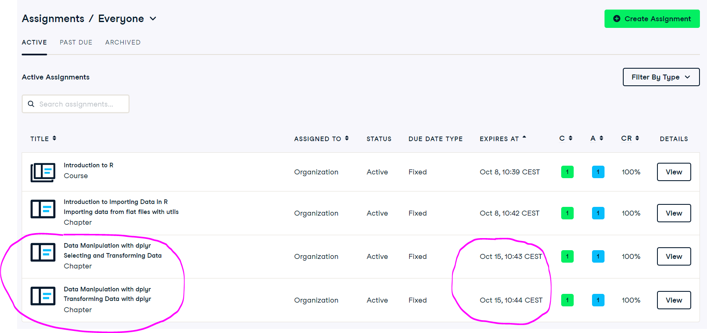

In this lab you will learn how to:
- filter and select data frames using
baseR anddplyrpackage, - create new variables in your dataframes using
baseR anddplyr, - export data frames to
.txtand.csv.
Import iris dataset
Start the RStudio from the R project icon that you created in the previous lab!
To be sure that the working directory is set to your project folder, use the get getwd() function. The result should end with .../My first R project (if you followed instructions in the second lab).
getwd()Import the dataset, assign it to an object called iris and inspect that it was loaded correctly:
iris <- read.csv(file = "01_data/iris.csv")
head(iris) Sepal_Length Sepal_Width Petal_Length Petal_Width Species
1 5.1 3.5 1.4 0.2 setosa
2 4.9 3.0 1.4 0.2 setosa
3 4.7 3.2 1.3 0.2 setosa
4 4.6 3.1 1.5 0.2 setosa
5 5.0 3.6 1.4 0.2 setosa
6 5.4 3.9 1.7 0.4 setosastr(iris)'data.frame': 150 obs. of 5 variables:
$ Sepal_Length: num 5.1 4.9 4.7 4.6 5 5.4 4.6 5 4.4 4.9 ...
$ Sepal_Width : num 3.5 3 3.2 3.1 3.6 3.9 3.4 3.4 2.9 3.1 ...
$ Petal_Length: num 1.4 1.4 1.3 1.5 1.4 1.7 1.4 1.5 1.4 1.5 ...
$ Petal_Width : num 0.2 0.2 0.2 0.2 0.2 0.4 0.3 0.2 0.2 0.1 ...
$ Species : chr "setosa" "setosa" "setosa" "setosa" ...Selecting and filtering dataframes
Everything in R can be done in multiple ways. We will look at how to filter and select parts of the data, how to create new variables and how to export our data. All of these are commonly used approaches, that you will use in the following exercises and also other classes. I will show you how to use base R functions and functions from dplyr package. Note, that there are some other packages and approaches, that can be used, each having its benefits and drawbacks (i.e. data.table package).
Base R
When we install R to our computers, we “only” get access to some functionalities that are available within R framework - this is called base R. The reason for this is, that there are so many available “tools/add-ons”, of which individual user doesn’t need a vast majority. Additional functionalities can be added easily and tailored to individual needs.
For selecting a single column from a dataframe using base R we use the $ sign. Before $ sign we write the name of data object we want to select from, after $ sign the name of column we want to select. From the imported data frame, we would like to take only the values of Petal_Length. By doing this, R simply prints the values in the console:
iris$Petal_Length [1] 1.4 1.4 1.3 1.5 1.4 1.7 1.4 1.5 1.4 1.5 1.5 1.6 1.4 1.1 1.2 1.5 1.3 1.4
[19] 1.7 1.5 1.7 1.5 1.0 1.7 1.9 1.6 1.6 1.5 1.4 1.6 1.6 1.5 1.5 1.4 1.5 1.2
[37] 1.3 1.4 1.3 1.5 1.3 1.3 1.3 1.6 1.9 1.4 1.6 1.4 1.5 1.4 4.7 4.5 4.9 4.0
[55] 4.6 4.5 4.7 3.3 4.6 3.9 3.5 4.2 4.0 4.7 3.6 4.4 4.5 4.1 4.5 3.9 4.8 4.0
[73] 4.9 4.7 4.3 4.4 4.8 5.0 4.5 3.5 3.8 3.7 3.9 5.1 4.5 4.5 4.7 4.4 4.1 4.0
[91] 4.4 4.6 4.0 3.3 4.2 4.2 4.2 4.3 3.0 4.1 6.0 5.1 5.9 5.6 5.8 6.6 4.5 6.3
[109] 5.8 6.1 5.1 5.3 5.5 5.0 5.1 5.3 5.5 6.7 6.9 5.0 5.7 4.9 6.7 4.9 5.7 6.0
[127] 4.8 4.9 5.6 5.8 6.1 6.4 5.6 5.1 5.6 6.1 5.6 5.5 4.8 5.4 5.6 5.1 5.1 5.9
[145] 5.7 5.2 5.0 5.2 5.4 5.1Alternative way is to use square brackets - [ , ]. Comma in the brackets separates filtering by rows (left) and columns (right). For column Petal_Length we specify its position in a dataframe.
iris[,3] [1] 1.4 1.4 1.3 1.5 1.4 1.7 1.4 1.5 1.4 1.5 1.5 1.6 1.4 1.1 1.2 1.5 1.3 1.4
[19] 1.7 1.5 1.7 1.5 1.0 1.7 1.9 1.6 1.6 1.5 1.4 1.6 1.6 1.5 1.5 1.4 1.5 1.2
[37] 1.3 1.4 1.3 1.5 1.3 1.3 1.3 1.6 1.9 1.4 1.6 1.4 1.5 1.4 4.7 4.5 4.9 4.0
[55] 4.6 4.5 4.7 3.3 4.6 3.9 3.5 4.2 4.0 4.7 3.6 4.4 4.5 4.1 4.5 3.9 4.8 4.0
[73] 4.9 4.7 4.3 4.4 4.8 5.0 4.5 3.5 3.8 3.7 3.9 5.1 4.5 4.5 4.7 4.4 4.1 4.0
[91] 4.4 4.6 4.0 3.3 4.2 4.2 4.2 4.3 3.0 4.1 6.0 5.1 5.9 5.6 5.8 6.6 4.5 6.3
[109] 5.8 6.1 5.1 5.3 5.5 5.0 5.1 5.3 5.5 6.7 6.9 5.0 5.7 4.9 6.7 4.9 5.7 6.0
[127] 4.8 4.9 5.6 5.8 6.1 6.4 5.6 5.1 5.6 6.1 5.6 5.5 4.8 5.4 5.6 5.1 5.1 5.9
[145] 5.7 5.2 5.0 5.2 5.4 5.1If for filtering we use the number of column, the results might change if the input data changes! In case you change your .csv file on the hard-drive, and the third column now contains another variable, R will take the third column and not column with Petal_Length, as it doesn’t care for the changes you made and you might not notice that. However, this can (will) have effect on the subsequent analysis, if it depends on this particular filtering operation.
To filter out specific values of one column using base R we use square brackets - [ , ] and specify a column with the $ and an expression for filtering. All of this must be on the left side of the comma! For example, if we would like to filter out all rows with Petal_width smaller than 0.2 cm:
iris[iris$Petal_Width < 0.2,] Sepal_Length Sepal_Width Petal_Length Petal_Width Species
10 4.9 3.1 1.5 0.1 setosa
13 4.8 3.0 1.4 0.1 setosa
14 4.3 3.0 1.1 0.1 setosa
33 5.2 4.1 1.5 0.1 setosa
38 4.9 3.6 1.4 0.1 setosaWe can also combine two conditions for filtering (AND or OR). For two conditions to apply at the same time we use AND operator - &:
iris[iris$Petal_Width < 0.2 & iris$Sepal_Length > 4.8,] Sepal_Length Sepal_Width Petal_Length Petal_Width Species
10 4.9 3.1 1.5 0.1 setosa
33 5.2 4.1 1.5 0.1 setosa
38 4.9 3.6 1.4 0.1 setosaTo apply one OR the other condition, we use OR operator |:
iris[iris$Petal_Width < 0.2 | iris$Sepal_Length > 7.6, ] Sepal_Length Sepal_Width Petal_Length Petal_Width Species
10 4.9 3.1 1.5 0.1 setosa
13 4.8 3.0 1.4 0.1 setosa
14 4.3 3.0 1.1 0.1 setosa
33 5.2 4.1 1.5 0.1 setosa
38 4.9 3.6 1.4 0.1 setosa
118 7.7 3.8 6.7 2.2 virginica
119 7.7 2.6 6.9 2.3 virginica
123 7.7 2.8 6.7 2.0 virginica
132 7.9 3.8 6.4 2.0 virginica
136 7.7 3.0 6.1 2.3 virginicaIn both cases, the whole expression must be written on the left side of the comma to work.
Sometimes we want to filter based on a specific word. In our case, maybe only one of the three species. We use double equal sign and write the word precisely as it is in our dataframe, included within the quotes. With the $ we tell R in which column it should look for the word:
iris[iris$Species == "virginica",] Sepal_Length Sepal_Width Petal_Length Petal_Width Species
101 6.3 3.3 6.0 2.5 virginica
102 5.8 2.7 5.1 1.9 virginica
103 7.1 3.0 5.9 2.1 virginica
104 6.3 2.9 5.6 1.8 virginica
105 6.5 3.0 5.8 2.2 virginica
106 7.6 3.0 6.6 2.1 virginica
107 4.9 2.5 4.5 1.7 virginica
108 7.3 2.9 6.3 1.8 virginica
109 6.7 2.5 5.8 1.8 virginica
110 7.2 3.6 6.1 2.5 virginica
111 6.5 3.2 5.1 2.0 virginica
112 6.4 2.7 5.3 1.9 virginica
113 6.8 3.0 5.5 2.1 virginica
114 5.7 2.5 5.0 2.0 virginica
115 5.8 2.8 5.1 2.4 virginica
116 6.4 3.2 5.3 2.3 virginica
117 6.5 3.0 5.5 1.8 virginica
118 7.7 3.8 6.7 2.2 virginica
119 7.7 2.6 6.9 2.3 virginica
120 6.0 2.2 5.0 1.5 virginica
121 6.9 3.2 5.7 2.3 virginica
122 5.6 2.8 4.9 2.0 virginica
123 7.7 2.8 6.7 2.0 virginica
124 6.3 2.7 4.9 1.8 virginica
125 6.7 3.3 5.7 2.1 virginica
126 7.2 3.2 6.0 1.8 virginica
127 6.2 2.8 4.8 1.8 virginica
128 6.1 3.0 4.9 1.8 virginica
129 6.4 2.8 5.6 2.1 virginica
130 7.2 3.0 5.8 1.6 virginica
131 7.4 2.8 6.1 1.9 virginica
132 7.9 3.8 6.4 2.0 virginica
133 6.4 2.8 5.6 2.2 virginica
134 6.3 2.8 5.1 1.5 virginica
135 6.1 2.6 5.6 1.4 virginica
136 7.7 3.0 6.1 2.3 virginica
137 6.3 3.4 5.6 2.4 virginica
138 6.4 3.1 5.5 1.8 virginica
139 6.0 3.0 4.8 1.8 virginica
140 6.9 3.1 5.4 2.1 virginica
141 6.7 3.1 5.6 2.4 virginica
142 6.9 3.1 5.1 2.3 virginica
143 5.8 2.7 5.1 1.9 virginica
144 6.8 3.2 5.9 2.3 virginica
145 6.7 3.3 5.7 2.5 virginica
146 6.7 3.0 5.2 2.3 virginica
147 6.3 2.5 5.0 1.9 virginica
148 6.5 3.0 5.2 2.0 virginica
149 6.2 3.4 5.4 2.3 virginica
150 5.9 3.0 5.1 1.8 virginicaDplyr R package
One alternative to do all of the above is to use dplyr package, which is more intuitive to use. It cannot be applied to all data types, but works perfectly with the tidy data frames. It does not come with the base R, so we need to install and load it.
In R, we install a package using install.packages() function with the name of the package in quotation marks within the parenthesis. This (should) automatically download and install the package. We need to load the package each time that we start or restart R or RStudio. This is done with library() function with the name of package without quotation marks in the parenthesis. Each package comes with a document in which all important information are available, example for dplyr can be accessed here. More popular packages usually have informative “cheat sheets” as well (here).
To add new functionalities to base R, we need to install R packages from the internet (imagine R package as an add-on or extension of the base installation). Installation needs to be done only once, before the first use of the package!
However, installing the package does not make it available for use. Again, not all packages are needed all the time so we have to load the package each time we restart R or RStudio to be able to use it!
install.packages("dplyr")library(dplyr)If you encounter the following error: Error in ... : could not find function "...", the most likely reason is that you have not run the library function, to make the package available within your current R session!
For selecting a single column from a dataframe we use select() function which takes two arguments: the name of data object we want to select from and the name of column we want to select. With select() function we can choose multiple columns and also rename them inside a single command. Same example as above, taking only the values of Petal_Length from iris:
select(iris, Petal_Length) Petal_Length
1 1.4
2 1.4
3 1.3
4 1.5
5 1.4
6 1.7
7 1.4
8 1.5
9 1.4
10 1.5
11 1.5
12 1.6
13 1.4
14 1.1
15 1.2
16 1.5
17 1.3
18 1.4
19 1.7
20 1.5
21 1.7
22 1.5
23 1.0
24 1.7
25 1.9
26 1.6
27 1.6
28 1.5
29 1.4
30 1.6
31 1.6
32 1.5
33 1.5
34 1.4
35 1.5
36 1.2
37 1.3
38 1.4
39 1.3
40 1.5
41 1.3
42 1.3
43 1.3
44 1.6
45 1.9
46 1.4
47 1.6
48 1.4
49 1.5
50 1.4
51 4.7
52 4.5
53 4.9
54 4.0
55 4.6
56 4.5
57 4.7
58 3.3
59 4.6
60 3.9
61 3.5
62 4.2
63 4.0
64 4.7
65 3.6
66 4.4
67 4.5
68 4.1
69 4.5
70 3.9
71 4.8
72 4.0
73 4.9
74 4.7
75 4.3
76 4.4
77 4.8
78 5.0
79 4.5
80 3.5
81 3.8
82 3.7
83 3.9
84 5.1
85 4.5
86 4.5
87 4.7
88 4.4
89 4.1
90 4.0
91 4.4
92 4.6
93 4.0
94 3.3
95 4.2
96 4.2
97 4.2
98 4.3
99 3.0
100 4.1
101 6.0
102 5.1
103 5.9
104 5.6
105 5.8
106 6.6
107 4.5
108 6.3
109 5.8
110 6.1
111 5.1
112 5.3
113 5.5
114 5.0
115 5.1
116 5.3
117 5.5
118 6.7
119 6.9
120 5.0
121 5.7
122 4.9
123 6.7
124 4.9
125 5.7
126 6.0
127 4.8
128 4.9
129 5.6
130 5.8
131 6.1
132 6.4
133 5.6
134 5.1
135 5.6
136 6.1
137 5.6
138 5.5
139 4.8
140 5.4
141 5.6
142 5.1
143 5.1
144 5.9
145 5.7
146 5.2
147 5.0
148 5.2
149 5.4
150 5.1For filtering by row values we use filter() function which also takes two arguments: the name of data object we want to select from and the expression based on which we want to filter. Same example as above:
filter(iris, Petal_Width < 0.2) Sepal_Length Sepal_Width Petal_Length Petal_Width Species
1 4.9 3.1 1.5 0.1 setosa
2 4.8 3.0 1.4 0.1 setosa
3 4.3 3.0 1.1 0.1 setosa
4 5.2 4.1 1.5 0.1 setosa
5 4.9 3.6 1.4 0.1 setosaAnd combine two conditions within the select, same examples as above:
filter(iris, Petal_Width < 0.2 & Sepal_Length > 4.8) Sepal_Length Sepal_Width Petal_Length Petal_Width Species
1 4.9 3.1 1.5 0.1 setosa
2 5.2 4.1 1.5 0.1 setosa
3 4.9 3.6 1.4 0.1 setosafilter(iris, Petal_Width < 0.2 | Sepal_Length > 7.6) Sepal_Length Sepal_Width Petal_Length Petal_Width Species
1 4.9 3.1 1.5 0.1 setosa
2 4.8 3.0 1.4 0.1 setosa
3 4.3 3.0 1.1 0.1 setosa
4 5.2 4.1 1.5 0.1 setosa
5 4.9 3.6 1.4 0.1 setosa
6 7.7 3.8 6.7 2.2 virginica
7 7.7 2.6 6.9 2.3 virginica
8 7.7 2.8 6.7 2.0 virginica
9 7.9 3.8 6.4 2.0 virginica
10 7.7 3.0 6.1 2.3 virginicaNext, filtering by word, same example:
filter(iris, Species == "virginica") Sepal_Length Sepal_Width Petal_Length Petal_Width Species
1 6.3 3.3 6.0 2.5 virginica
2 5.8 2.7 5.1 1.9 virginica
3 7.1 3.0 5.9 2.1 virginica
4 6.3 2.9 5.6 1.8 virginica
5 6.5 3.0 5.8 2.2 virginica
6 7.6 3.0 6.6 2.1 virginica
7 4.9 2.5 4.5 1.7 virginica
8 7.3 2.9 6.3 1.8 virginica
9 6.7 2.5 5.8 1.8 virginica
10 7.2 3.6 6.1 2.5 virginica
11 6.5 3.2 5.1 2.0 virginica
12 6.4 2.7 5.3 1.9 virginica
13 6.8 3.0 5.5 2.1 virginica
14 5.7 2.5 5.0 2.0 virginica
15 5.8 2.8 5.1 2.4 virginica
16 6.4 3.2 5.3 2.3 virginica
17 6.5 3.0 5.5 1.8 virginica
18 7.7 3.8 6.7 2.2 virginica
19 7.7 2.6 6.9 2.3 virginica
20 6.0 2.2 5.0 1.5 virginica
21 6.9 3.2 5.7 2.3 virginica
22 5.6 2.8 4.9 2.0 virginica
23 7.7 2.8 6.7 2.0 virginica
24 6.3 2.7 4.9 1.8 virginica
25 6.7 3.3 5.7 2.1 virginica
26 7.2 3.2 6.0 1.8 virginica
27 6.2 2.8 4.8 1.8 virginica
28 6.1 3.0 4.9 1.8 virginica
29 6.4 2.8 5.6 2.1 virginica
30 7.2 3.0 5.8 1.6 virginica
31 7.4 2.8 6.1 1.9 virginica
32 7.9 3.8 6.4 2.0 virginica
33 6.4 2.8 5.6 2.2 virginica
34 6.3 2.8 5.1 1.5 virginica
35 6.1 2.6 5.6 1.4 virginica
36 7.7 3.0 6.1 2.3 virginica
37 6.3 3.4 5.6 2.4 virginica
38 6.4 3.1 5.5 1.8 virginica
39 6.0 3.0 4.8 1.8 virginica
40 6.9 3.1 5.4 2.1 virginica
41 6.7 3.1 5.6 2.4 virginica
42 6.9 3.1 5.1 2.3 virginica
43 5.8 2.7 5.1 1.9 virginica
44 6.8 3.2 5.9 2.3 virginica
45 6.7 3.3 5.7 2.5 virginica
46 6.7 3.0 5.2 2.3 virginica
47 6.3 2.5 5.0 1.9 virginica
48 6.5 3.0 5.2 2.0 virginica
49 6.2 3.4 5.4 2.3 virginica
50 5.9 3.0 5.1 1.8 virginica- Did you notice any difference between outputs after using the same operations in base R and dplyr?
- What is an R package? How do you access and use its functionalities?
Creating new variables in R
With the $ we can also create and assign new variables to our data frame. Before the assign operator we specify the name of the new variable (must not be the same as existing column names, otherwise it will overwrite one existing column). After the assign operator we specify what we want to be stored in this new variable. For example, we can calculate the ratio between Sepal_Length and Sepal_Width. R will go from row to row, calculate the ratio and store it in the same row of the new column:
iris$ratio <- iris$Sepal_Length / iris$Sepal_Width
names(iris)[1] "Sepal_Length" "Sepal_Width" "Petal_Length" "Petal_Width" "Species"
[6] "ratio" str(iris)'data.frame': 150 obs. of 6 variables:
$ Sepal_Length: num 5.1 4.9 4.7 4.6 5 5.4 4.6 5 4.4 4.9 ...
$ Sepal_Width : num 3.5 3 3.2 3.1 3.6 3.9 3.4 3.4 2.9 3.1 ...
$ Petal_Length: num 1.4 1.4 1.3 1.5 1.4 1.7 1.4 1.5 1.4 1.5 ...
$ Petal_Width : num 0.2 0.2 0.2 0.2 0.2 0.4 0.3 0.2 0.2 0.1 ...
$ Species : chr "setosa" "setosa" "setosa" "setosa" ...
$ ratio : num 1.46 1.63 1.47 1.48 1.39 ...For creating new variables, we use mutate() function which also takes two arguments: the name of data object we want to select from and the name of the new variable followed by the expression, based on which the variable will be created. Same example as above, just choosing a different column name:
iris <- mutate(iris, ratio2 = Sepal_Length / Sepal_Width)
names(iris)[1] "Sepal_Length" "Sepal_Width" "Petal_Length" "Petal_Width" "Species"
[6] "ratio" "ratio2" str(iris) 'data.frame': 150 obs. of 7 variables:
$ Sepal_Length: num 5.1 4.9 4.7 4.6 5 5.4 4.6 5 4.4 4.9 ...
$ Sepal_Width : num 3.5 3 3.2 3.1 3.6 3.9 3.4 3.4 2.9 3.1 ...
$ Petal_Length: num 1.4 1.4 1.3 1.5 1.4 1.7 1.4 1.5 1.4 1.5 ...
$ Petal_Width : num 0.2 0.2 0.2 0.2 0.2 0.4 0.3 0.2 0.2 0.1 ...
$ Species : chr "setosa" "setosa" "setosa" "setosa" ...
$ ratio : num 1.46 1.63 1.47 1.48 1.39 ...
$ ratio2 : num 1.46 1.63 1.47 1.48 1.39 ...Exporting datasets
Opposite to importing files with read functions, we export files with corresponding write functions. For exporting to .csv file, we use write.csv() and for .txt file write.table(). Both have two arguments, first is x, which is the R object we want to export (in our case iris) and the other file, the name of the file that will be created on computers hard drive, in our case “iris_new.csv". Adding prefix "01_data/..." will save it to that particular folder within our working directory.The argument rownames = FALSE will prevent R to add a column with row names, that would contain consecutive numbers starting from 1.
write.csv(x = iris, file = "01_data/iris_new.csv", row.names = FALSE)
write.table(x = iris, file = "01_data/iris_new.txt", row.names = FALSE)Check your R project directory on the hard drive, if the two files are indeed there.
Exercises
Read the instructions carefully. If you don’t understand something or something doesn’t work straight away, first think about the problem/error, consult the materials in front of you, than google, than the neighbor on your left and on your right. If after all that you still don’t know how to fix the problem or proceed, than ask me for help!
1.1) Import the penguins dataset and check if the file was correctly imported (344 observations, 8 variables) adjust the code if needed.
1.2) Inspect the dataset and figure which penguin species are included and on which islands they were monitored in the dataset?
1.3) Using base R, filter the dataset to contain only penguins with bill_depth_mm less than 17.3.
1.4) Using base R, filter the dataset to contain only all penguins from Dream island in 2008. Were all three species recorded there that year?
1.5) Using dplyr, filter the dataset to contain only penguins with flipper_length_mm more than 213.
1.6) Using dplyr, filter the dataset to contain only penguin female penguins from Biscoe island.
1.7) Using base R, create a new column in which you calculate the ratio of bill length to bill depth.
1.8) Using dplyr, create a new column in which body mass will be expressed in kilograms instead of grams (body_mass_g).
1.9) Export the dataframe with two new columns as a penguins_new.txt file.
2.1) Import the dataset you downloaded from the internet in the previous lab.
2.2) Using base R and dplyr, perform four sensible filtering and/or selecting operations.
2.3) In case your data has two or more numerical columns, create one new column using mathematical operation on two other columns of your choice by both base R and dplyr.
2.4) In case your data has only one column with numerical data, calculate a new column as a square root or squared value of the numerical column.
2.5) export your dataset with new columns in a format of your choice.
Until the end of the class or homework

Mandatory reading before next class
(on e-classroom)
Zuur, Ieno & Elphick, 2010, A protocol for data exploration to avoid common statistical problems